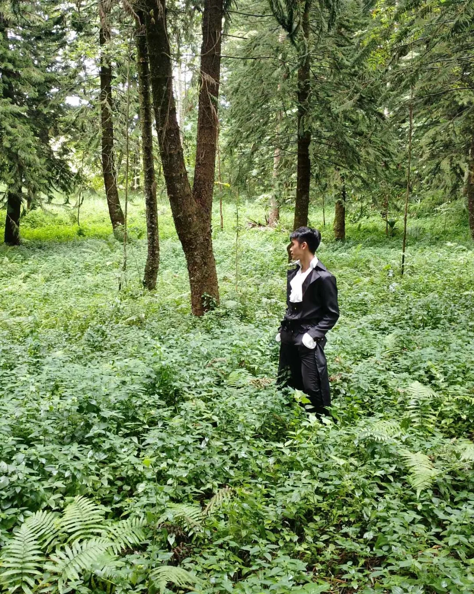
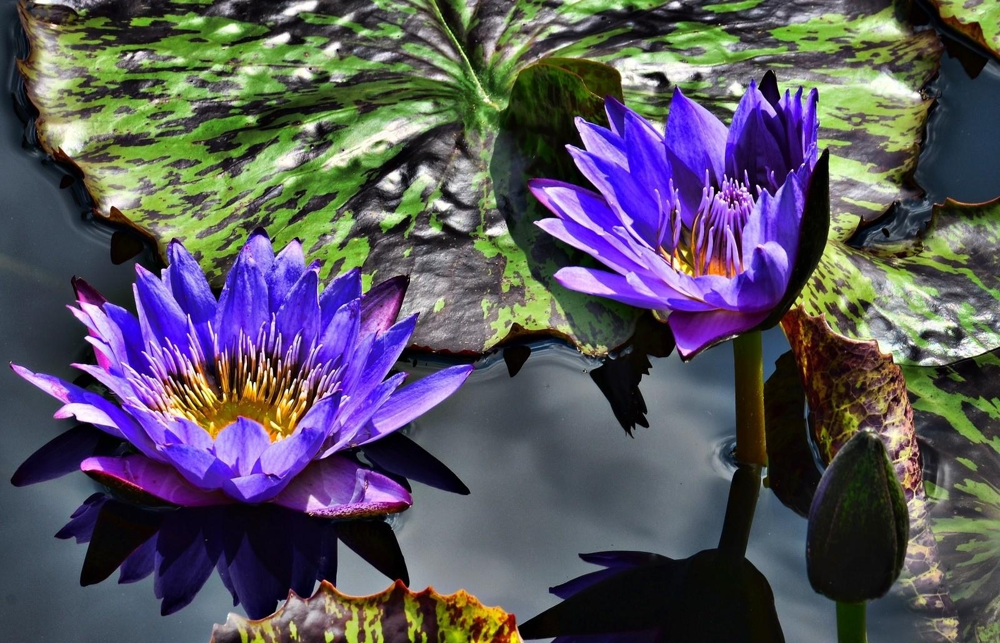
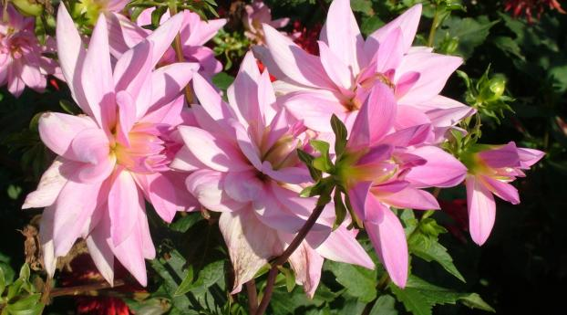

Daisies
Daisies are special to me because of their simple, cheerful appearance. They remind me that beauty can be found in the simplest things and that even the smallest flowers can bring happiness.

3 photos
Petal & Bloom Employee
2026 memories
Florist
I play Floryn in ML.
Just a dude who counts flower petals everyday.
Hello! My name is Gabriel Carlo Galabo. I am a Florist from Petal & Bloom.
I enjoy cultivating flowers and I love to take images of them as a hobby.
Daisies are special to me because of their simple, cheerful appearance. They remind me that beauty can be found in the simplest things and that even the smallest flowers can bring happiness.

Asters are special to me because of their delicate petals and charming appearance. They symbolize patience, love, and wisdom, reminding me to appreciate the little things and find beauty in even the simplest moments.

